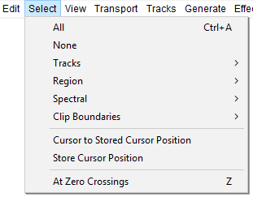

Select Menu
- Click, or hover, on any menu item in the image to read about that command. Skip the image
- 
All Ctrl + A
Selects all of the audio in all of the tracks.
None Ctrl + Shift + A Extra
Deselects all of the audio in all of the tracks.
Tracks
The Tracks submenu has commands to extend the current selection up and/or down into all tracks, or into all Sync-Locked tracks in the project.
Region
The Region submenu has commands for defining selection regions and lets you store and retrieve the position of the editing cursor or selection region.
Spectral
The Spectral submenu has contains to enable you to make Spectral selection which can be used to make selections that include a frequency range as well as a time range on tracks in Spectrogram view. Spectral selection is used with special spectral edit effects to make changes to the frequency content of the selected audio.
Clip Boundaries
The Clip Boundaries submenu lets you select between the editing cursor and clip boundaries or to navigate though clips, selecting all of the current clip.
Cursor to Stored Cursor Position
When playing or recording (or paused):, selection is made from the the position of the Playback cursor or Recording cursor to the position previously saved by the command. For easier use without having to Pause, you may want to add a shortcut for "Cursor to Stored Cursor Position".
When there is no active audio: selects from the current position of the editing cursor (or from the left edge of the current selection region) to the stored position.
An alternative procedure if you want to store many positions is to add a label when required at the editing cursor or playback/recording cursor.
Store Cursor Position
Stores a cursor position as defined below, which can then be used with the command to create or modify a selection region.
- If audio is not actively playing, recording or paused: the stored cursor position is the position of the editing cursor or of the left edge of the selection region.
- If audio is active: the stored cursor position is the position of the Playback cursor or Recording cursor at the time you issue the command to store. For easier use without having to Pause, you may want to add a shortcut for "Store Cursor Position".
If you want to store the position of the editing cursor (or both boundaries of a selection) while audio is active, use the command.
| There is no visual cue marker to remind you what position you saved, you will need to remember it. |
At Zero Crossings Z
At Zero Crossings helps to avoid clicks at edit points when making cuts and joins by moving the edges of a selection region (or the cursor position) very slightly so they are at a rising zero crossing point.
| This feature does not necessarily find the nearest zero crossing to the current position. It aims to find the crossing where the average amplitude of samples in the vicinity is lowest. |